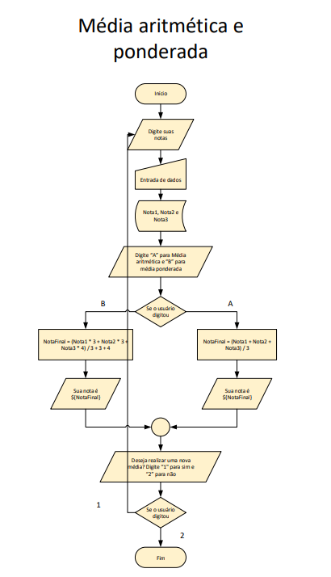

Fluxogramas e Algoritmos
Entenda e veja o funcionamento destes elementos!
O que são Fluxogramas?
Os fluxogramas nada mais são do que uma representação gráfica de um processo ou sistema usando símbolos e linhas para mostrar o fluxo de informações, tarefas ou decisões de uma maneira sequencial. É uma ferramenta visual usada para descrever como algo funciona de maneira passo a passo.
Permite que o processo seja constantemente revistado, possibilitando, dessa forma, a análise crítica, a identificação de falhas e as oportunidades de melhoria.

Quais os símbolos do fluxograma?
Há vários símbolos e sua divisão se dá em: Representativos Operacionais de, Ramificação e Controle do Fluxo, Entrada e Saída, Armazenamento de Arquivos e Informações e Processamento de Dados.

Resumindo, não utilize símbolos muito diferentes que apenas alguns entendem, há uma grande chance de que você falhe na comunicação. Portanto, deixe sempre as coisas mais simples.
O que são algoritmos?
Um algoritmo é um conjunto de passos e diretrizes que um programa de computador (ou qualquer processo) segue para realizar suas funções. Em termos simples, é como um conjunto de instruções que dizem ao programa o que fazer. Mesmo ações cotidianas podem ser desdobradas em algoritmos, tornando mais fácil entender como elas funcionam.

Como funcionam os algoritmos?
Os algoritmos são como receitas de cozinha para computadores. Eles são criados com um conjunto de passos específicos que dizem ao computador como lidar com dados e encontrar soluções para problemas. Por exemplo, se você quer encontrar informações sobre um tópico em um site de notícias, um algoritmo seguiria um conjunto de regras predefinidas para examinar todo o conteúdo do site e identificar as partes que se encaixam no que você está procurando. É como se fosse um guia que o computador segue para realizar tarefas específicas.
Média aritmética
A média aritmética é uma medida estatística que representa o valor médio de um conjunto de números. Para calcular a média aritmética, siga os seguintes passos:
- Soma dos números: Some todos os números do conjunto. Essa etapa envolve adicionar cada valor individual.
- Contagem de números: Conte quantos números há no conjunto. Isso representa o número de elementos ou observações que você está considerando.
- Cálculo da média: Divida a soma dos números pelo número de elementos. A fórmula para calcular a média aritmética é:
- Média = Soma dos números / Número de elementos.
O resultado obtido após esse cálculo será a média aritmética do conjunto de números. Por exemplo, se você tiver os números 10, 15, 20, 25 e 30, você somaria esses números (10 + 15 + 20 + 25 + 30 = 100) e depois dividiria pelo número de elementos (5), o que resultaria em uma média aritmética de 20.
A média aritmética é amplamente utilizada em estatísticas e matemática para resumir um conjunto de valores em um único valor representativo. Ela é importante em várias áreas, desde análise de dados até cálculos financeiros, e é uma das medidas estatísticas mais simples e amplamente aplicadas.
Veja o código em: